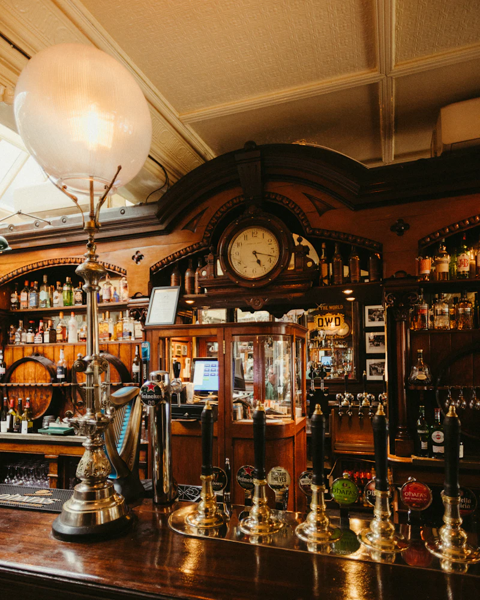
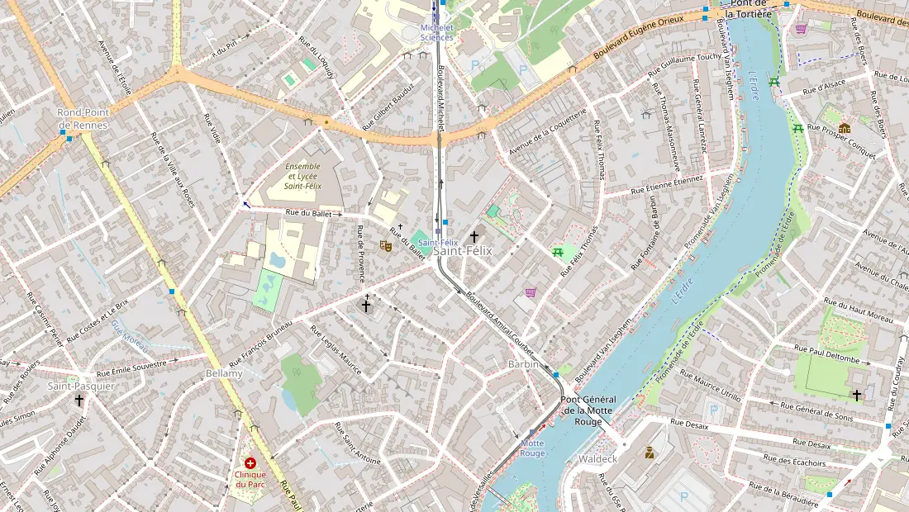

- From 8:30am on weekdays, 11am on Saturday
- 5 place Saint-Félix, Nantes
- Terrace on a pedestrian square
« A neighbourhood bistro, a bit of a pub, a bit of a sports café, a bit of a brasserie […] but above all a place to get together and share. »
Hours and address
| Monday | 8:30am to 3pm |
|---|---|
| Tuesday | 8:30am to midnight |
| Wednesday | 8:30am to midnight |
| Thursday | 8:30am to midnight |
| Friday | 8:30am to midnight |
| Saturday | 11am to midnight |
| Sunday | Closed |
| Monday | noon to 2pm |
|---|---|
| Tuesday | noon to 2pm |
| Wednesday | noon to 2pm and 7pm to 9pm |
| Thursday | noon to 2pm and 7pm to 9pm |
| Friday | noon to 2pm and 7pm to 9pm |
| Saturday | noon to 2pm and 7pm to 9pm |
| Sunday | Closed |

© OpenStreetMapOpen in OpenStreetMap5 place Saint-FélixNantes